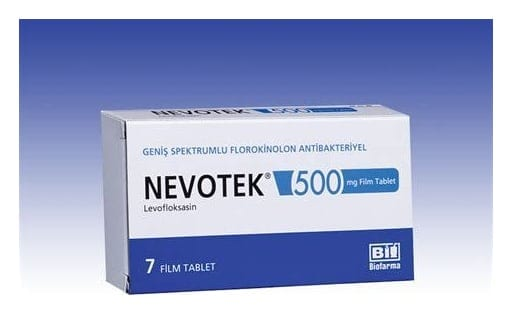

Nevotek 500 mg Film Kaplı Tablet, 7 Adet

Ne için kullanılır
KT · Bölüm 1 NEVOTEK®film kaplı tablet ağızdan alınır. İlacınızın bir kutusu içinde her biri 500 mg levofloksasin içeren 7 adet film kaplı tablet bulunur. Doz ayarlamasını kolaylaştırmak için film kaplı tablet çentiklidir. NEVOTEK®antibiyotik adı verilen ilaç grubuna dahildir ve bir “kinolon” grubu antibiyotiktir. NEVOTEK®vücutta enfeksiyona sebep olan bakterileri öldürür.
Bu ilacı kullanmaya başlamadan önce bu KULLANMA TALİMATINI dikkatlice okuyunuz, çünkü sizin için önemli bilgiler içermektedir. Bu kullanma talimatını saklayınız. Daha sonra tekrar okumaya ihtiyaç duyabilirsiniz. Eğer ilave sorularınız olursa, lütfen doktorunuza veya eczacınıza danışınız. Bu ilaç kişisel olarak sizin için reçete edilmiştir, başkalarına vermeyiniz. Bu ilacın kullanımı sırasında, doktora veya hastaneye gittiğinizde doktorunuza bu ilacı kullandığınızı söyleyiniz. Bu talimatta yazılanlara aynen uyunuz. İlaç hakkında size önerilen dozun dışında yüksek veya düşük doz kullanmayınız.
NEVOTEK®: Sinüslerin, Akciğerlerin (uzun süreli solunum problemleri veya pnömonisi olan kişilerde), Böbrek veya mesane dahil olmak üzere idrar yolunun, Prostat bezinin (uzun süreli enfeksiyonları), Yumuşak dokunun (kaslar dahil deri ve deri altının) enfeksiyonlarının tedavisinde kullanılabilir.
NEVOTEK®, bazı özel durumlarda, şarbon hastalığına neden olan bakterilere maruz kaldıktan sonra bir akciğer hastalığı olan şarbona yakalanma veya bu hastalığın kötüleşme olasılığını azaltmak için kullanılabilir.